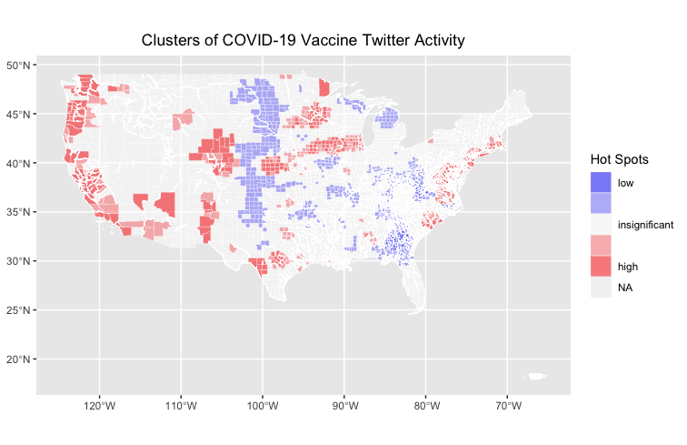

home | GIS | musings | cartography
| aboutOriginal study by Wang, Z., X. Ye, and M. H. Tsou. 2016. Spatial, temporal, and content analysis of Twitter for wildfire hazards. Natural Hazards 83 (1):523–540. DOI:10.1007/s11069-016-2329-6. and First replication study by Holler, J. 2021 (in preparation). Hurricane Dorian vs Sharpie Pen: an empirical test of social amplification of risk on social media.
Replication Author: Hannah Rigdon
Replication Materials Available at: [github repository name](github repository link)
Created: 10 May 2021 Revised: 10 May 2021
Wang et al (2016) analyzed Twitter data for wildfires in California, finding that there is a relationship between wildfire-related Twitter activity and wildfires. Wang also found that there was a spatial relationship between the two- Twitter activity reflected the geography of the wildfires. This finding means that social media can be used to help understand the spatial patterns of disasters and help inform natural disaster response and management. However, there are still significant limitations. The twitter scraping did not cover the entire extent of the wildfires and it is questionable whether or not the sampled data is a valid representation of Twitter activity overall. Holler (2021) is studying Twitter data for Hurricane Dorian on the Atlantic coast, finding that in spite of tending news and social media content regarding a false narrative of risk, original Tweets still clustered significantly along the real hurricane track, and only along the hurricane track. Reproducing and replicating spatial research of Wang et all and Holler continues to be relevant because social media increasingly being used as a data source for patterns of human behavior. Social media is by no means representative of entire populations, therefore it is important to understand how researchers can responsibly use social media content to generate knowledge about behavior. In my replication study, I will be using twitter data regarding COVID-19 vaccinations and compare twitter activity to vaccination rates by county across the US.
Wang et al's study considered tweets in two different phases. First, they looked at tweets containing the words "fire" or "wildfire" to generate a more overarching picture of where people were tweeting about wildfires, which coincided with where the wildfires were happening. They then narrowed down their dataset by specific wildfire place names. Wang et al conducted their analysis using kernel density estimation, text mining, and network analysis to understand Twitter activity related to wildfires. The kernel density estimation compares the coordinates of wildfire tweets to a map of population to create a heat map or map the intensity of wildfire-related Twitter activity. Text mining was conducted to collect twitter data, clean it up, and pull out important topics. The social network analysis was done using retweets to map networks of connectivity between Twitter users based on tweets and retweets. Holler (2021) loosely replicated the methods of Wang et al (2016) for the case of Hurricane Dorian's landfall on the U.S. mainland during the 2019 Atlantic Hurricane season. Data was based on Twitter Search API queries for "dorian" or "hurricane" or "sharpiegate" . Holler modified Wang et al's methods by not searching for retweets for network analysis, focusing instead on original Tweet content with keywords hurricane, Dorian, or sharpiegate (a trending hashtag referring to the storm). Holler modified the methodology for normalizing tweet data by creating a normalized Tweet difference index and extended teh methodology to test for spatial cluserting with the local Getis-Ord statistic. The study tested a hypothesis that false narratives of hurricane risk promulgated at the highest levels of the United States government would significantly distort the geographic distribution of Twitter activity related to the hurricane and its impacts, finding that original Twitter data still clustered only in the affected areas of the Atlantic coast in spite of false narratives about risk of a westward track through Alabama. Wang et al (2016) conducted their study using the tm and igraph packages in R 3.1.2. The replication study by Holler (2021) used R, including the rtweet, rehydratoR, igraph, sf, and spdep packages for analysis.
For this analysis, I used tweets from within 8 days of May 10th that mentioned the words "moderna" or "pfizer" or "vaccine" that were from within a thousand mile radius of central Pennsylvania. I then joined my data with data collected by Emma Brown with the same search terms from the West Coast in order to get a full picture of twitter activity across the United States. I also used "normal" twitter activity from within the same time range and radius in order to normalize the twitter activity. I also used population data from the US Census to normalize the tweet rate. Our original dataset contained around 130,000 tweets, but only 9461 of them actually contained geographic information and were considered in our analysis. For the analysis, I followed the procedure as Holler (2021). The spatial analysis was conducted in R and the script can be found here. I also used COVID-19 vaccination data collected by Benjy Renton to map COVID-19 vaccination rates by county. The vaccination records are based off of state reports and normalized by population. I also removed any state that was reporting less than 75% of their vaccine records with county-specific information so that the vaccination rates would not be artificially depressed by the missing geographic information. Benjy's data can be found on his github page.(ATTACH LINK).
Figure 1 shows the temporal analysis of the collected tweets
Figure 1.2 shows the most frequently used words along with vaccine, pfizer, or moderna
Figure 1.3 shows a map of the twitter activity used in this analysis

Figure 1.4 shows a map of the clusters of twitter activity about COVID-19 vaccines
Figure 2 shows a map of COVID-19 vaccination rates in the US
I mostly followed the protocol for this lab. The only deviation was when I joined my data with Emma to get tweets that were geographically representative of the whole country. To do this, we did an anti-join with both our datasets, and then joined the results of the anti-join onto Emma's data. The Twitter data that we joined together was also from two nonidentical time periods, which could contribute some uncertainty to the results of our analysis. Overall, the twitter data is representative of April 27th through May 10th, but Emma's tweets are sourced from the beginning portion of that time window while mine are from the second half. However, that shouldn't affect the outcome of our analysis too much, as vaccination rates shouldn't be drastically different on a day-to-day basis.
When comparing the hot-spot map (Figure 1.4) to the map of vaccination rates (Figure 2), you can see that the hotspots of Twitter activity about COVID-19 vaccinations can be somewhat correlated with higher vaccination rates. Especially along the West Coast, there is a strong similarity in the patterns of higher clustering activity and higher vaccination rates. Additionally, we can see significantly low activity in midwest in states like Kansas where there also appears to be low vaccination rates. These results could indicate that there is a correlation between social media activity about vaccines and higher vaccination rates, suggesting that posting information about vaccines or public conversations about vaccinations could contribute to higher vaccination rates. There is a lot of uncertainty about how representative social media is of broader cultural conversations and human behavior, but the results of this analysis, similar to Wang et all, suggest that there could be some insight into human behavior in social media patterns when it comes to disaster response and information sharing.
Wang, Z., X. Ye, and M. H. Tsou. 2016. Spatial, temporal, and content analysis of Twitter for wildfire hazards. Natural Hazards 83 (1):523–540. DOI:10.1007/s11069-016-2329-6
This template was developed by Peter Kedron and Joseph Holler with funding support from HEGS-2049837. This template is an adaptation of the ReScience Article Template Developed by N.P Rougier, released under a GPL version 3 license and available here: https://github.com/ReScience/template. Copyright © Nicolas Rougier and coauthors. It also draws inspiration from the pre-registration protocol of the Open Science Framework and the replication studies of Camerer et al. (2016, 2018). See https://osf.io/pfdyw/ and https://osf.io/bzm54/
Camerer, C. F., A. Dreber, E. Forsell, T.-H. Ho, J. Huber, M. Johannesson, M. Kirchler, J. Almenberg, A. Altmejd, T. Chan, E. Heikensten, F. Holzmeister, T. Imai, S. Isaksson, G. Nave, T. Pfeiffer, M. Razen, and H. Wu. 2016. Evaluating replicability of laboratory experiments in economics. Science 351 (6280):1433–1436. https://www.sciencemag.org/lookup/doi/10.1126/science.aaf0918.
Camerer, C. F., A. Dreber, F. Holzmeister, T.-H. Ho, J. Huber, M. Johannesson, M. Kirchler, G. Nave, B. A. Nosek, T. Pfeiffer, A. Altmejd, N. Buttrick, T. Chan, Y. Chen, E. Forsell, A. Gampa, E. Heikensten, L. Hummer, T. Imai, S. Isaksson, D. Manfredi, J. Rose, E.-J. Wagenmakers, and H. Wu. 2018. Evaluating the replicability of social science experiments in Nature and Science between 2010 and 2015. Nature Human Behaviour 2 (9):637–644. http://www.nature.com/articles/s41562-018-0399-z.